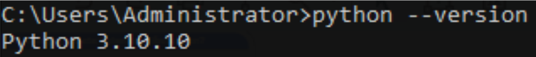
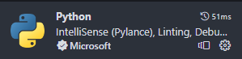
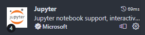
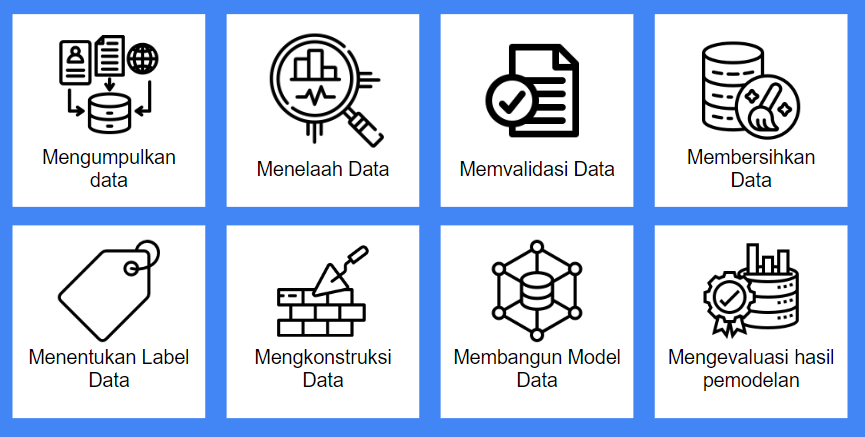
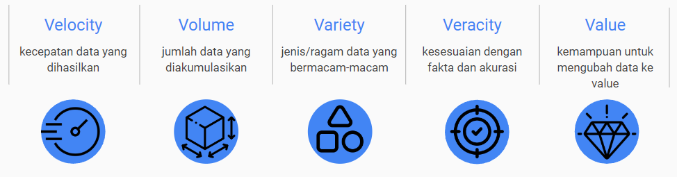
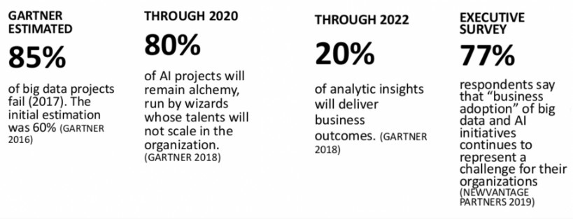
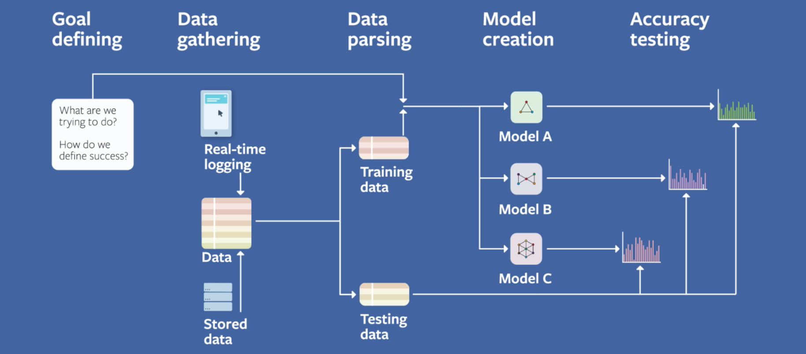
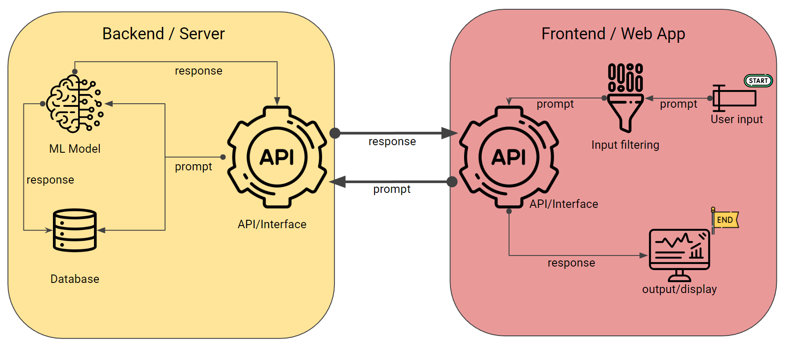
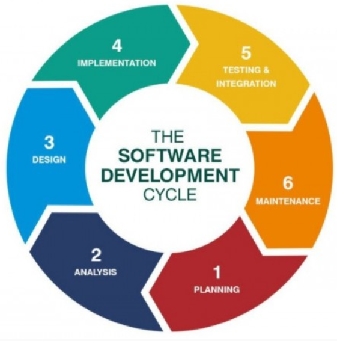
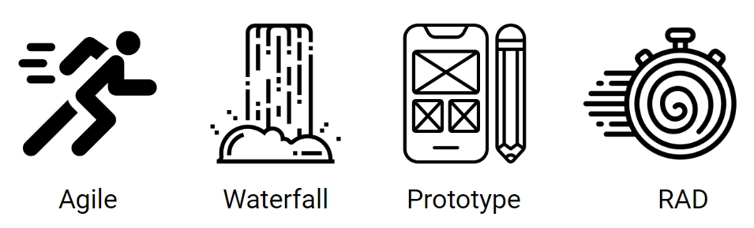

2 Data Science Tools
Sama seperti pekerjaan pada umumnya, seorang Data Scientist juga membutuhkan alat-alat untuk melakukan pekerjaannya. Namun alat yang dimaksud adalah sekumpulan software yang digunakan untuk pekerjaan Data Scientist sehari-hari. Perlu diingat bahwa semua tools harus sudah diinstall sebelum pelaksanaan materi koding. Mari kita pelajari tools yang akan kita gunakan!
2.1 Python versi 3.10.10
- Buka browser, kunjungi https://www.python.org/downloads/windows/ , cari bagian Python 3.10.10 - Feb 8, 2023, lalu pilih Download Windows Installer.
- Jalankan file yang di download, tunggu sampai proses installing selesai.
- Buka Command Prompt, lalu jalankan command “python –version”
Jika hasil dari command tersebut adalah “3.10.10” maka instalasi python sudah selesai.

2.2 Development Environment
Environment adalah lingkungan yang kita tinggali selama proses koding. Di course ini kita bisa menggunakan salah satu dari tiga aplikasi, yaitu VSCode, Jupyter dan Google Colab. Cukup pilih salah satu dari ketiga opsi Kami merekomendasikan untuk menggunakan Jupyter notebook. Untuk alasannya, silahkan simak slide selanjutnya
2.2.1 VSCode Notebook
VSCode adalah sebuah code editor multifungsi yang cukup ringan dan handal. Kelebihan dari VSCode adalah fleksibilitas dari VSCode. Anda dapat mengkustomisasi tema, menambah ekstensi, dan mengubah semua settingan yang ada di VSCode. Anda mempunyai kendali penuh. Kekurangan dari VSCode adalah terkadang settingan VSCode terlalu kompleks untuk digunakan.
Berikut langkah-langkah untuk menginstalasi VScode Notebook :
- Buka browser, kunjungi https://code.visualstudio.com/download# pilih salah satu link yang berada di System Installer.
- Jalankan file yang di download, tunggu sampai proses installing selesai.
- Selanjutnya kita akan menginstall beberapa ekstensi.
- Buka VSCode, pergi ke bagian Extensions, (ctrl+shift+x) lalu ketik “Python”, lalu install ekstensi yang muncul di paling atas.

- Masih di tab Extensions, ketik “Jupyter”, lalu instal ekstensi yang muncul di paling atas

- Reload VSCode
2.2.2 Jupyter Notebook
Jupyter Notebook adalah aplikasi yang digunakan untuk memproses dan menampilkan teks, kode, dan data secara bersamaan. Jupyter sangat cocok untuk data science karena Jupyter sangat ringan, mudah di install, dan mudah untuk digunakan. Oleh karena itu, kita merekomendasikan anda untuk menggunakan Jupyter Notebook untuk pelatihan ini.
Berikut langkah-langkah untuk menginstalasi Jupyter Notebook :
- Buka Windows start menu, ketik “cmd”
- Klik kanan pada item command prompt, lalu pilih run as administrator
- Di dalam command prompt, ketik “pip install jupyterlab”
- Tunggu sampai proses selesai
- Ketik “jupyter-lab” untuk menjalankan aplikasi jupyter
2.3 Install Libraries
- Buka terminal (ctrl+shift+~) lalu ketik “pip install [package name]” Contoh : “pip install pandas”, dimana pandas adalah sebuah nama dari package Untuk membuka terminal di Jupyter Notebook, buka launcher baru (ctrl+shift+L) lalu pilih terminal.
- Package name diisi dengan list dibawah ini
- numpy
- scipy
- pandas
- matplotlib
- seaborn
- scikit
3 Konsep Data Science
Data science adalah bidang yang berkaitan dengan ekstraksi pengetahuan dan wawasan dari data. Data science menggabungkan konsep dan metode dari berbagai disiplin ilmu seperti statistika, matematika, komputer, dan pemodelan untuk menganalisis dan menginterpretasikan data secara sistematis.
3.1 Workflow
Di proses pekerjaan pengolahan data, Data Scientist bekerja untuk mengembangkan model terbaik dari data untuk menjawab permasalahan bisnis. Data Scientist mengambil data dengan bantuan Data Engineer dan DevOps Engineer, lalu menganalisa data tersebut. Hasil analisa data dikembalikan ke mereka atau dipresentasikan ke anggota lain.

3.2 Mengapa Data Scientist Dibutuhkan?
Aplikasi Modern mempunyai skala yang jauh lebih besar dari aplikasi-aplikasi sebelumnya. Dalam satu waktu, jumlah user bisa mencapai ratusan ribu, bahkan sampai jutaan. Masing-masing user menghasilkan beberapa request ke server untuk mengambil data, dan menghasilkan data tersendiri. Hasilnya, data yang dibuat, disimpan, dan diproses sangatlah besar. Fenomena ini dinamakan: BIG DATA
3.3 Apa Yang Dimaksud Big Data?
Big data mempunyai karakteristik yang dinamakan 5V 
4 Pengembangan Model Aplikasi Data Science
Tahukah anda bahwa 70% pengembangan software gagal? Data science adalah bagian dari pengembangan software yang mempunyai tingkat kegagalan paling tinggi di angka 80% tingkat kegagalan.

Banyak sekali masalah yang dihadapi di dalam proses pengembangan software. Mulai dari perubahan requirement, maintenance yang kurang, hingga dokumentasi yang tidak lengkap. Oleh karena itu, pemahaman terhadap pengembangan model sangatlah penting, agar semua usaha kita untuk membuat sebuah aplikasi tidak sia sia, dan dapat membantu orang banyak.
4.1 Tahap Pengembangan Sistem AI Berbasis Big Data:
- Pelatihan, Adalah tahap dimana kita membangun sebuah model dari nol. Proses pelatihan meliputi pemilihan dataset, pemilihan algoritma, penyetelan parameter, testing, dan lain lain
- Penggunaan, Ketika model sudah dibuat dan siap untuk digunakan, model akan di deploy di internet agar dapat digunakan oleh semua orang.
4.1.1 Pelatihan

4.1.2 Penggunaan

4.2 Software Development Life Cycle (SDLC)
Metode SDLC (Software Development Life Cycle) adalah proses pembuatan dan pengubahan sistem serta model dan metodologi yang digunakan untuk mengembangkan sistem rekayasa perangkat lunak.

Proses logika yang digunakan oleh seorang analis sistem untuk mengembangkan sebuah sistem informasi yang melibatkan requirements, validation, training dan pemilik sistem proses yang memproduksi sebuah software dengan kualitas setinggi-tingginya tetapi dengan biaya yang serendah-rendahnya (Stackify)
4.3 Jenis-Jenis SDLC
Berikut adalah beberapa jenis dari SDLC:

4.3.1 Agile
Metode pengembangan Agile adalah pendekatan kolaboratif dan iteratif dalam pengembangan perangkat lunak. Dalam metode ini, pengembangan dilakukan dalam iterasi kecil yang disebut “sprints”
Kelebihan
- Fleksibilitas tinggi - Kolaborasi erat antar tim - Aplikasi di-update secara rutin - Fokus kepada kebutuhan pengguna
Kekurangan
- Sulitnya merencanakan anggaran dan timeline - Memerlukan tingkat disiplin yang tinggi dan pengawasan konstan - Kurang efektif untuk project skala besar
4.3.2 Waterfall
Metode pengembangan Waterfall adalah pendekatan linier dan berurutan dalam pengembangan perangkat lunak. Dalam metode ini, setiap fase pengembangan (analisis kebutuhan, desain, implementasi, pengujian, dan pemeliharaan) dilakukan secara berurutan, di mana setiap fase harus selesai sebelum melanjutkan ke fase berikutnya.
Kelebihan
- Struktur yang jelas
- Dokumentasi lengkap dan rapi
- Cocok untuk proyek yang kebutuhannya tidak berubah-ubah
Kekurangan
- Kurang fleksibel ketika menghadapi kebutuhan yang berubah
- Keterbatasan dalam kolaborasi dan feedback
- Risiko terlambatnya mendeteksi kesalahan/glitch
4.3.3 Prototype
Metode pengembangan prototyping adalah pendekatan dalam pengembangan perangkat lunak di mana prototipe perangkat lunak awal dibuat dan digunakan untuk mengumpulkan umpan balik dari pengguna dan pemangku kepentingan. Prototipe tersebut dapat berupa versi sederhana atau parsial dari perangkat lunak yang akhir.
Kelebihan
- Feedback didapatkan lebih awal
- Klarifikasi kebutuhan lebih jelas
- Meningkatkan kolaborasi tim
Kelemahan
- Membutuhkan banyak waktu dan sumber daya
- Potensi kesalahan di aspek desain dan efisiensi besar
- Kesulitan dalam timing untuk berhenti mengembangkan prototipe
4.4 Rapid Application Development (RAD)
Metode pengembangan Rapid Application Development (RAD) adalah pendekatan iteratif dan kolaboratif dalam pengembangan perangkat lunak yang menekankan kecepatan, fleksibilitas, dan keterlibatan pengguna. Dalam metode ini, pengembangan dilakukan dalam siklus pendek yang disebut “iterasi” dan melibatkan partisipasi aktif dari pengguna.
Kelebihan
- Waktu pengembangan cepat
- Keterlibatan pengguna secara sering dan langsung
- Fleksibilitas tinggi
- Tingginya kolaborasi terhadap developer dan pengguna
Kelemahan
- Ketergantungan terhadap pengguna tinggi
- Sulit untuk diskalakan
- Kualitas dan efisiensi arsitektur rendah
4.5 Kesimpulan
Kesimpulannya, Di dunia software development, tidak ada metode yang lebih baik atau buruk, hanya ada pengorbanan atau ‘tradeoff’.
Untuk melakukan proses development yang baik dan efisien, kita harus memahami kebutuhan, kondisi, dan sumber daya yang kita punya. Pemahaman yang baik memungkinkan kita untuk memilih tradeoff mana yang akan diambil. Setelah itu kita menyesuaikan tradeoff yang kita pilih dengan jenis SDLC yang sudah ada.